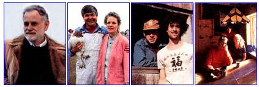
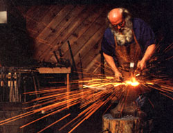

The lust for independent
work finally brought this
artist to the mountains.
The Rise of New America
Home
The prime movers have already moved.
"Despite what you might have heard, I was never a nuclear physicist before becoming a blacksmith," Charles Fuller admitted as he leaned against a 50-pound trip hammer in his shop in Pigeon Forge, Tennessee. "But people keep choosing to paint me that way, I suppose for dramatic effect." On close inspection, it was also abundantly clear he was neither Santa Claus, despite a blizzard of a beard and a roseate nose, nor Popeye, despite his bulging forearms.
"The truth is," he continued, "I was a mechanic-formally, a mechanical maintenance supervisor-at a nuclear power plant in Florida. A cut above a nuclear janitor, for sure, but by no means a physicist."
An allied truth is that the life change of 45-year-old Charles Fuller from urban to rural and high-tech to low is as dramatic as if he had indeed walked from a career in nuclear physics.
"First of all, my wife, Patti, and I got to driving up to Tennessee with our two daughters whenever we had the chance, just for the mountains and woodlands. Second, we found that these chances were fewer and fewer. Your life isn't your own when you work at a nuclear plant. Something always goes wrong-pump seals rupture or steam valves fail-meaning I had to fix it to keep the operation from shutting down. I often needed to live at the plant for weeks on end. The money was terrific, but so was the pressure."
Then, in 1974, Fuller read an ad in Mother Earth News describing a basic blacksmithing school in Lebanon, New Hampshire. Could this be the way out? He enrolled, emerging four weeks later armed with the rudiments of a new skill, albeit a somewhat anachronistic one. Amazingly, before another month passed he chanced on a want ad in a Tennessee newspaper: Silver Dollar City, a theme park in Pigeon Forge, required a blacksmith.
"I told them I was just a beginner," he recalls, "but I must have looked the part. Since I was also reasonably articulate, they offered me the job." The park, an evocation of village life in the 1870s, not only liked his looks and amiability, but liked the nuclear connection as well. "Management evidently felt that such a contrast between past and present would prove highly promotable," he says. "They were right."
"In effect," he continues, "I became a twentieth-century entertainer and promoter while at the same time working as a nineteenth-century village blacksmith. Visitors came to the shop and, as I forged this or that, I provided edifying banter. I also wound up on plenty of TV talk shows. Interviewers loved the nuclear thing."
By then Fuller had moved his family into a small sharecropper's cottage in Wears Valley, 10 miles outside of Pigeon Forge. "It was nothing like the fancy house we'd had in Florida," he allows, "but it became home, I could garden, and the valley took my breath away."
Meanwhile, as he forged, bantered and publicized, his skills as a blacksmith grew, partly through day-to-day experience but also because Silver Dollar on occasion sent him to blacksmithing seminars and workshops.
"On first starting out," he recounts, "I worked on small items: sconces, fireplace tools. Then I tackled bigger jobs: iron gates, even freestanding fireplaces. What really spurred me, however, was the workshop in Aspen, Colorado, run by Francis Whittaker, probably the best-known blacksmith in the country. He showed me an entirely new dimension of ironwork-the artistic. It inspired and emboldened me."
In 1984, shortly after Silver Dollar City changed its name to Dollywood, Fuller left the job to establish his own shop in Pigeon Forge, called The Broken Anvil. By then his work had grown larger in scope and more intricate and imaginative in detail. It had also attracted the attention of a network of architects and interior designers, including-significantly-those specializing in churches.
Today Fuller's creations-candelabra, altar sticks, gates, pulpit railings-grace the interiors of several churches and cathedrals in the Southeast. Among other commissions, he is currently finishing a huge, foliated chandelier for the official residence of Drexel University's president. In the past year, he has also defined a new goal for himself to create artistic work that rivals that of the American master, Samuel Yellen, who in the first part of this century was to iron what Tiffany was to glass.
Fuller and Patti still live in the small cottage in Wears Valley, content with its warmth and surroundings. But for Fuller, the transition from the suburbs to Penturbia has led to another equally profound transition-from nuclear to ecclesiastic.
|
 Working iron in his shop, The Broken Advil, Fuller for a time commuted between centuries, figuratively speaking. |
 |
|